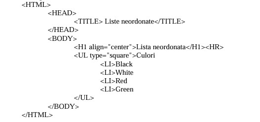
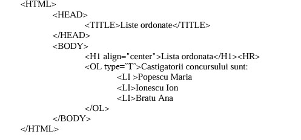
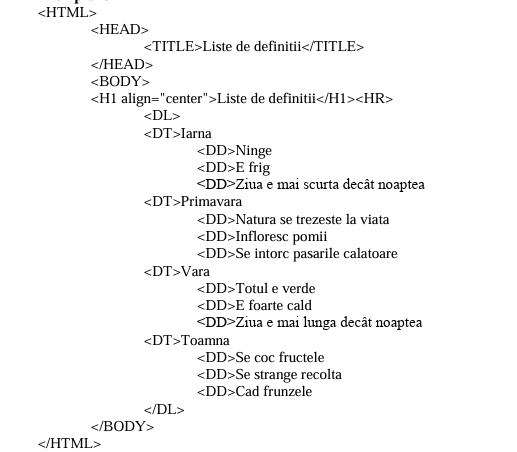
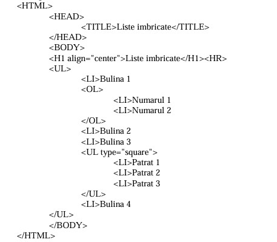

Liste în HTML
HTML permite organizarea elementelor sub formă de listă. Există trei tipuri principale:
1. Listă neordonată (<ul>)
Elementele apar cu buline (•):
2. Listă ordonată (<ol>)
Elementele sunt numerotate:
- Primul pas
- Al doilea pas
- Al treilea pas
3. Listă de definiții (<dl>)
Folosită pentru a explica termeni. Se compune din:
<dt> – Termen (Definition Term)<dd> – Definiție (Definition Description)
- HTML
- Limbaj pentru structura paginilor web.
- CSS
- Limbaj pentru stilizarea paginilor web.
- JavaScript
- Limbaj pentru interactivitate în pagini web.
4. Liste imbricate (liste în liste)
Listele pot fi puse în interiorul altor liste:
Exemplu 1: Listă neordonată imbricată
Exemplu 2: Listă ordonată imbricată
- Pasul 1
- Sub-pas 1
- Sub-pas 2
- Pasul 2
5. Combinare tipuri de liste
Poți combina liste ordonate cu neordonate:
- Tehnologii web:
- Alte limbaje
Concluzie
Listele sunt utile pentru organizarea clară a informațiilor. HTML oferă liste numerotate, cu buline, de definiții și posibilitatea de imbricare pentru structurare complexă.
Liste Neordonate Ex

Liste Ordonate Ex

Liste de Definitii Ex

Liste Imbricate Ex
